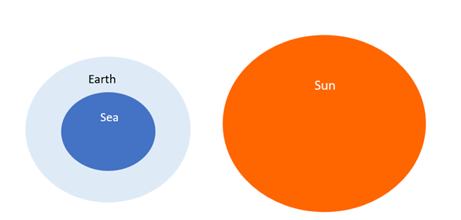

Venn Diagram
A Venn Diagram is a representation method for all possible relations that can exist between a given group of elements in a single figure
Sample Example on Venn Diagram
Ex-Relation between Earth, Sea and sun
Solution:
Venn diagrams questions require practice and logical ability to solve them easily. We are going to discuss here some important Venn diagram questions for a better understanding of concepts. So practice these questions for your upcoming exams.....